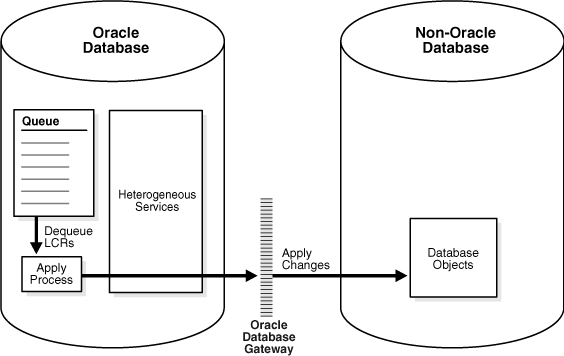
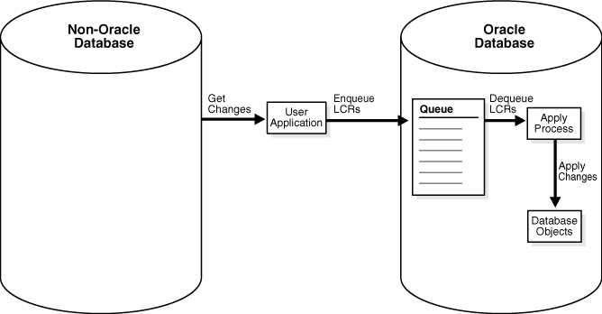

11 Oracle Streams Heterogeneous Information Sharing
This chapter explains concepts relating to Oracle Streams support for information sharing between Oracle databases and non-Oracle databases.
This chapter contains these topics:
-
Non-Oracle to Non-Oracle Data Sharing with Oracle Streams
Note:
A new feature called XStream is available in Oracle Database 11g Release 2 (11.2) and later. XStream enables Oracle Call Interface and Java applications to access the database changes in a stream. See Oracle Database XStream Guide for information about XStream.
11.1 Oracle to Non-Oracle Data Sharing with Oracle Streams
To share DML changes from an Oracle source database to a non-Oracle destination database, the Oracle database functions as a proxy and carries out some steps that would usually be done at the destination database. That is, the LCRs intended for the non-Oracle destination database are dequeued in the Oracle database itself and an apply process at the Oracle database applies the changes to the non-Oracle database across a network connection through an Oracle Database Gateway. Figure 11-1 shows an Oracle database sharing data with a non-Oracle database.
Figure 11-1 Oracle to Non-Oracle Heterogeneous Data Sharing
Description of "Figure 11-1 Oracle to Non-Oracle Heterogeneous Data Sharing"
You should configure the Oracle Database Gateway to use the transaction model COMMIT_CONFIRM.
See Also:
The Oracle documentation for your specific Oracle Database Gateway for information about using the transaction model COMMIT_CONFIRM for your Oracle Database Gateway
11.1.1 Change Capture and Staging in an Oracle to Non-Oracle Environment
In an Oracle to non-Oracle environment, a capture process or a synchronous capture functions the same way as it would in an Oracle-only environment. That is, a capture process finds changes in the redo log, captures them based on its rules, and enqueues the captured changes as logical change records (LCRs) into an ANYDATA queue. A synchronous capture uses an internal mechanism to capture changes based on its rules and enqueue the captured changes as row LCRs into an ANYDATA queue. In addition, a single capture process or synchronous capture can capture changes that will be applied at both Oracle and non-Oracle databases.
Similarly, the ANYDATA queue that stages the LCRs functions the same way as it would in an Oracle-only environment, and you can propagate LCRs to any number of intermediate queues in Oracle databases before they are applied at a non-Oracle database.
See Also:
-
Oracle Streams Concepts and Administration for general information about capture processes, synchronous captures, staging, and propagations
-
Preparing for Oracle Streams Replication for information about capture processes, synchronous captures, staging, and propagations in an Oracle Streams replication environment
11.1.2 Change Apply in an Oracle to Non-Oracle Environment
An apply process running in an Oracle database uses Heterogeneous Services and an Oracle Database Gateway to apply changes encapsulated in LCRs directly to database objects in a non-Oracle database. The LCRs are not propagated to a queue in the non-Oracle database, as they would be in an Oracle-only Oracle Streams environment. Instead, the apply process applies the changes directly through a database link to the non-Oracle database.
Note:
Oracle Streams apply processes do not support Generic Connectivity.
11.1.2.1 Apply Process Configuration in an Oracle to Non-Oracle Environment
This section describes the configuration of an apply process that will apply changes to a non-Oracle database.
11.1.2.1.1 Before Creating an Apply Process in an Oracle to Non-Oracle Environment
Before you create an apply process that will apply changes to a non-Oracle database, configure Heterogeneous Services, the Oracle Database Gateway, and a database link.
Oracle Streams supports the following Oracle Database Gateways:
-
Oracle Database Gateway for Sybase
-
Oracle Database Gateway for Informix
-
Oracle Database Gateway for SQL Server
-
Oracle Database Gateway for DRDA
The database link will be used by the apply process to apply the changes to the non-Oracle database. The database link must be created with an explicit CONNECT TO clause.
See Also:
-
Oracle Database Heterogeneous Connectivity User's Guide for more information about Heterogeneous Services and Oracle Database Gateway
-
The Oracle documentation for your Oracle Database Gateway
11.1.2.1.2 Apply Process Creation in an Oracle to Non-Oracle Environment
After the database link has been created and is working properly, create the apply process using the CREATE_APPLY procedure in the DBMS_APPLY_ADM package and specify the database link for the apply_database_link parameter. After you create an apply process, you can use apply process rules to specify which changes are applied at the non-Oracle database.
See Also:
-
Oracle Database PL/SQL Packages and Types Reference for more information about the procedures in the
DBMS_APPLY_ADMpackage -
Oracle Streams Concepts and Administration for information about specifying apply process rules
11.1.2.1.3 Substitute Key Columns in an Oracle to Non-Oracle Heterogeneous Environment
If you use substitute key columns for any of the tables at the non-Oracle database, then specify the database link to the non-Oracle database when you run the SET_KEY_COLUMNS procedure in the DBMS_APPLY_ADM package.
11.1.2.1.4 Parallelism in an Oracle to Non-Oracle Heterogeneous Environment
You must set the parallelism apply process parameter to 1, the default setting, when an apply process is applying changes to a non-Oracle database. Currently, parallel apply to non-Oracle databases is not supported. However, you can use multiple apply processes to apply changes a non-Oracle database.
11.1.2.1.5 Procedure DML Handlers in an Oracle to Non-Oracle Heterogeneous Environment
If you use a procedure DML handler to process row LCRs for any of the tables at the non-Oracle database, then specify the database link to the non-Oracle database when you run the SET_DML_HANDLER procedure in the DBMS_APPLY_ADM package.
See Also:
Oracle Streams Concepts and Administration for information about message processing options for an apply process
11.1.2.1.6 Message Handlers in an Oracle to Non-Oracle Heterogeneous Environment
If you want to use a message handler to process user messages for a non-Oracle database, then, when you run the CREATE_APPLY procedure in the DBMS_APPLY_ADM package, specify the database link to the non-Oracle database using the apply_database_link parameter, and specify the message handler procedure using the message_handler parameter.
See Also:
Oracle Streams Concepts and Administration for information about message processing options and managing message handlers
11.1.2.1.7 Error and Conflict Handlers in an Oracle to Non-Oracle Heterogeneous Environment
Currently, error handlers and conflict handlers are not supported when sharing data from an Oracle database to a non-Oracle database. If an apply error occurs, then the transaction containing the LCR that caused the error is moved into the error queue in the Oracle database.
11.1.2.2 Data Types Applied at Non-Oracle Databases
When applying changes to a non-Oracle database, an apply process applies changes made to columns of only the following data types:
-
CHAR -
VARCHAR2 -
NCHAR -
NVARCHAR2 -
NUMBER -
DATE -
RAW -
TIMESTAMP -
TIMESTAMPWITHTIMEZONE -
TIMESTAMPWITHLOCALTIMEZONE -
INTERVALYEARTOMONTH -
INTERVALDAYTOSECOND
The apply process does not apply changes in columns of the following data types to non-Oracle databases: CLOB, NCLOB, BLOB, BFILE, LONG, LONG RAW, ROWID, UROWID, user-defined types (including object types, REFs, varrays, and nested tables), and Oracle-supplied types (including Any types, XML types, spatial types, and media types). The apply process raises an error when an LCR contains a data type that is not listed, and the transaction containing the LCR that caused the error is moved to the error queue in the Oracle database.
Each Oracle Database Gateway might have further limitations regarding data types. For a data type to be supported in an Oracle to non-Oracle environment, the data type must be supported by both Oracle Streams and the Oracle Database Gateway being used.
See Also:
-
Oracle Database SQL Language Reference for more information about these data types
-
The Oracle documentation for your specific Oracle Database Gateway
11.1.2.3 Types of DML Changes Applied at Non-Oracle Databases
When you specify that DML changes made to certain tables should be applied at a non-Oracle database, an apply process can apply only the following types of DML changes:
-
INSERT -
UPDATE -
DELETE
Note:
The apply process cannot apply DDL changes at non-Oracle databases.
11.1.3 Transformations in an Oracle to Non-Oracle Environment
In an Oracle to non-Oracle environment, you can specify rule-based transformations during capture or apply the same way as you would in an Oracle-only environment. In addition, if your environment propagates LCRs to one or more intermediate Oracle databases before they are applied at a non-Oracle database, then you can specify a rule-based transformation during propagation from a queue at an Oracle database to another queue at an Oracle database.
See Also:
Oracle Streams Concepts and Administration for more information about rule-based transformations
11.1.4 Messaging Gateway and Oracle Streams
Messaging Gateway is a feature of the Oracle database that provides propagation between Oracle queues and non-Oracle message queuing systems. Messages enqueued into an Oracle queue are automatically propagated to a non-Oracle queue, and the messages enqueued into a non-Oracle queue are automatically propagated to an Oracle queue. It provides guaranteed message delivery to the non-Oracle messaging system and supports the native message format for the non-Oracle messaging system. It also supports specification of user-defined transformations that are invoked while propagating from an Oracle queue to the non-Oracle messaging system or from the non-Oracle messaging system to an Oracle queue.
See Also:
Oracle Database Advanced Queuing User's Guide for more information about the Messaging Gateway
11.1.5 Error Handling in an Oracle to Non-Oracle Environment
If the apply process encounters an unhandled error when it tries to apply an LCR at a non-Oracle database, then the transaction containing the LCR is placed in the error queue in the Oracle database that is running the apply process. The apply process detects data conflicts in the same way as it does in an Oracle-only environment, but automatic conflict resolution is not supported currently in an Oracle to non-Oracle environment. Therefore, any data conflicts encountered are treated as apply errors.
11.1.6 Example Oracle to Non-Oracle Streams Environment
Oracle Streams Extended Examples contains a detailed example that includes sharing data in an Oracle to non-Oracle Streams environment.
11.2 Non-Oracle to Oracle Data Sharing with Oracle Streams
To capture and propagate changes from a non-Oracle database to an Oracle database, a custom application is required. This application gets the changes made to the non-Oracle database by reading from transaction logs, by using triggers, or by some other method. The application must assemble and order the transactions and must convert each change into a logical change record (LCR). Next, the application must enqueue the LCRs in an Oracle database using the DBMS_STREAMS_MESSAGING package or the DBMS_AQ package. The application must commit after enqueuing all LCRs in each transaction. Figure 11-2 shows a non-Oracle databases sharing data with an Oracle database.
Figure 11-2 Non-Oracle to Oracle Heterogeneous Data Sharing
Description of "Figure 11-2 Non-Oracle to Oracle Heterogeneous Data Sharing"
11.2.1 Change Capture in a Non-Oracle to Oracle Environment
Because the custom user application is responsible for assembling changes at the non-Oracle database into LCRs and enqueuing the LCRs at the Oracle database, the application is completely responsible for change capture. Therefore, the application must construct LCRs that represent changes at the non-Oracle database and then enqueue these LCRs into the queue at the Oracle database. The application can enqueue multiple transactions concurrently, but the transactions must be committed in the same order as the transactions on the non-Oracle source database.
See Also:
"Constructing and Enqueuing LCRs" for more information about constructing and enqueuing LCRs
11.2.2 Staging in a Non-Oracle to Oracle Environment
To ensure the same transactional consistency at both the Oracle database where changes are applied and the non-Oracle database where changes originate, you must use a transactional queue to stage the LCRs at the Oracle database. For example, suppose a single transaction contains three row changes, and the custom application enqueues three row LCRs, one for each change, and then commits. With a transactional queue, a commit is performed by the apply process after the third row LCR, retaining the consistency of the transaction. If you use a nontransactional queue, then a commit is performed for each row LCR by the apply process. The SET_UP_QUEUE procedure in the DBMS_STREAMS_ADM package creates a transactional queue automatically.
Also, the queue at the Oracle database should be a commit-time queue. A commit-time queue orders LCRs by approximate commit system change number (approximate CSCN) of the transaction that includes the LCRs. Commit-time queues preserve transactional dependency ordering between LCRs in the queue, if the application that enqueued the LCRs commits the transactions in the correct order. Also, commit-time queues ensure consistent browses of LCRs in a queue.
See Also:
Oracle Streams Concepts and Administration for more information about transactional queues and commit-time queues
11.2.3 Change Apply in a Non-Oracle to Oracle Environment
In a non-Oracle to Oracle environment, the apply process functions the same way as it would in an Oracle-only environment. That is, it dequeues each LCR from its associated queue based on apply process rules, performs any rule-based transformation, and either sends the LCR to a handler or applies it directly. Error handling and conflict resolution also function the same as they would in an Oracle-only environment. So, you can specify a prebuilt update conflict handler or create a custom conflict handler to resolve conflicts.
The apply process should be configured to apply persistent LCRs, not captured LCRs. So, the apply process should be created using the CREATE_APPLY procedure in the DBMS_APPLY_ADM package, and the apply_captured parameter should be set to FALSE when you run this procedure. After the apply process is created, you can use procedures in the DBMS_STREAMS_ADM package to add rules for LCRs to the apply process rule sets.
See Also:
-
Oracle Streams Concepts and Administration for more information about apply processes, rules, and rule-based transformations
11.2.4 Instantiation from a Non-Oracle Database to an Oracle Database
There is no automatic way to instantiate tables that exist at a non-Oracle database at an Oracle database. However, you can perform the following general procedure to instantiate a table manually:
- At the non-Oracle database, use a non-Oracle utility to export the table to a flat file.
- At the Oracle database, create an empty table that matches the table at the non-Oracle database.
- At the Oracle database, use SQL*Loader to load the contents of the flat file into the table.
See Also:
Oracle Database Utilities for information about using SQL*Loader
11.3 Non-Oracle to Non-Oracle Data Sharing with Oracle Streams
Oracle Streams supports data sharing between two non-Oracle databases through a combination of non-Oracle to Oracle data sharing and Oracle to non-Oracle data sharing. Such an environment would use Oracle Streams in an Oracle database as an intermediate database between two non-Oracle databases.
For example, a non-Oracle to non-Oracle environment can consist of the following databases:
-
A non-Oracle database named
het1.example.com -
An Oracle database named
dbs1.example.com -
A non-Oracle database named
het2.example.com
A user application assembles changes at het1.example.com and enqueues them in dbs1.example.com. Next, the apply process at dbs1.example.com applies the changes to het2.example.com using Heterogeneous Services and an Oracle Database Gateway. Another apply process at dbs1.example.com could apply some or all of the changes in the queue locally at dbs1.example.com. One or more propagations at dbs1.example.com could propagate some or all of the changes in the queue to other Oracle databases.